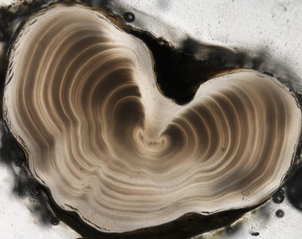

 Kocovsky and Carline (2000) examined methods to estimate the age of the unexploited population of Walleye in Pymatuning Sanctuary (PA). Scales, dorsal spines, and otoliths were extracted from fish sampled in trap nets during the spawning run in March and April of 1997. Two readers independently examined each structure without knowledge of fish length or sex. Only consensus ages for each structure are recorded in WalleyePS.csv (view, download, meta).
from Derek H. Ogle , created 07-Nov-15, updated 07-Nov-15, Comments/Suggestions.